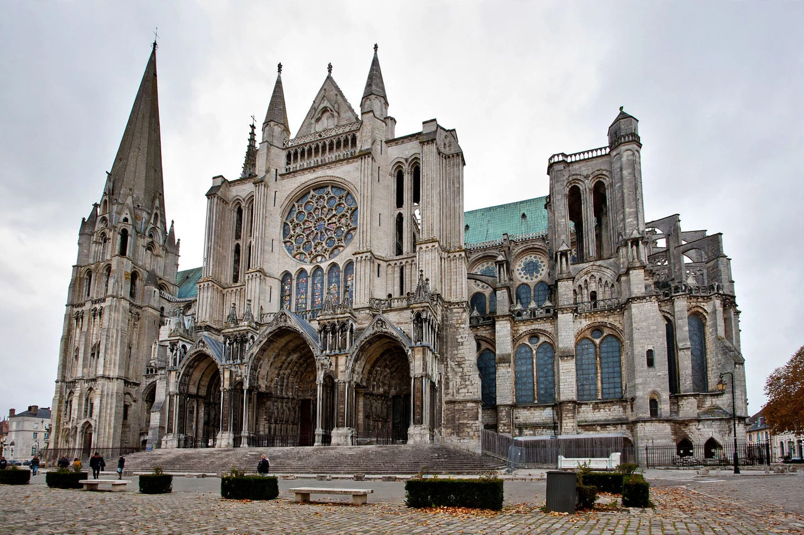

Gothic architecture

Chartres Cathedral in France: twin spires, flying buttresses and a great rose window above the west portalsGothic architecture is an architectural style that was particularly popular in Europe from the late 12th century to the 16th century, evolving from Romanesque architecture. Its characteristic features include the pointed arch, the ribbed vault and the flying buttress, which together allowed taller, lighter buildings with far larger windows than had previously been possible, filled with stained glass.
The style originated at the abbey basilica of Saint-Denis near Paris, rebuilt under Abbot Suger in the 1140s, and produced some of Europe's most famous buildings: Chartres, Reims, Amiens, Notre-Dame de Paris, Cologne Cathedral and Milan Cathedral. Regional variants include English Perpendicular Gothic and the Venetian and German traditions.
Gothic Revival
After centuries of eclipse by classical styles, Gothic was revived from the mid-18th century and became the favoured style for churches, universities and parliaments in the 19th century — notably the Palace of Westminster in London and Cologne Cathedral's completion (1880).